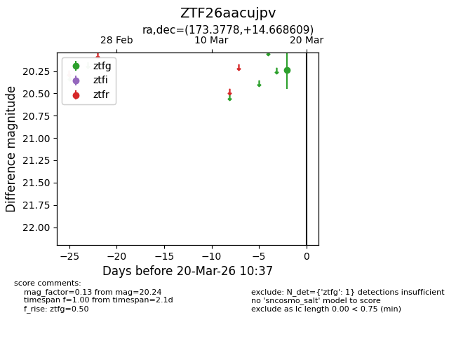
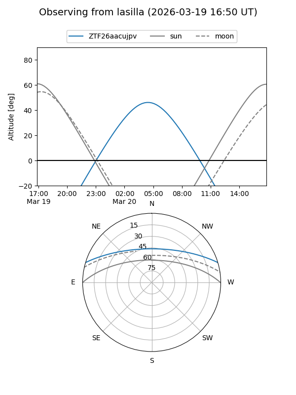
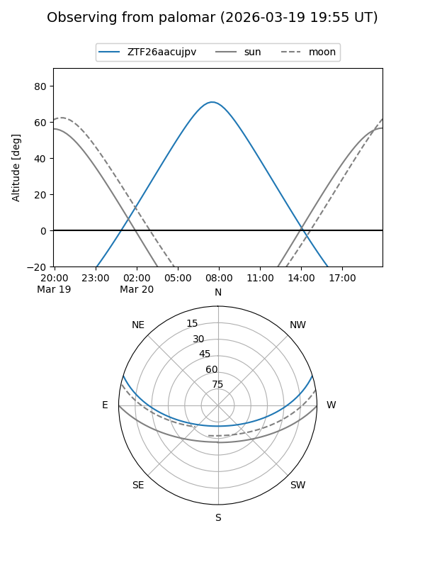

ZTF26aacujpv
Target ZTF26aacujpv at 2026-03-20 10:39
Aliases and brokers:
FINK: link
Lasair: link
ALeRCE: link
alt names
ZTF26aacujpv (ztf,fink_ztf)
Coordinates:
equatorial (ra, dec) = 173.3778,+14.66861
equatorial (HMS+DMS) = 11:33:30.68,+14:40:06.99
galactic (l, b) = (243.4913,+67.99569)
Flags:
Photometry:
last ztfg=20.24
1 ztfg detections
Lightcurve

Visibility


Additional plots